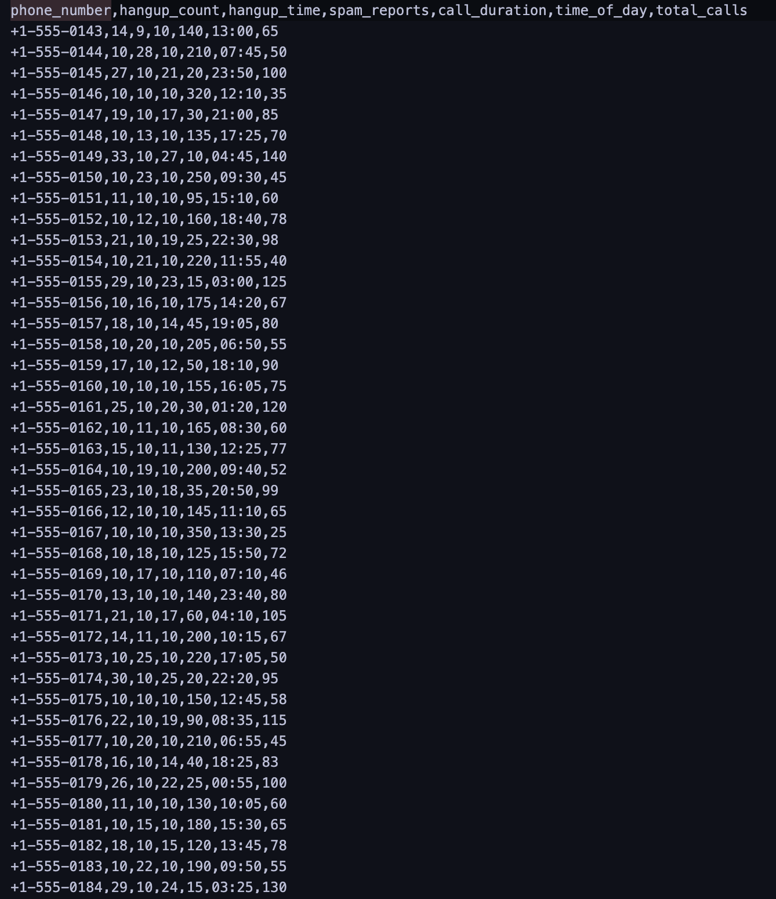

(Score represents the likeliness the number is potential spam)
We are actively gathering real-time data to monitor and analyze the behavior of various scammers. Our focus is on identifying which scammer is currently leading in terms of the highest number of hang-ups within this specific time frame. By tracking these interactions as they happen, we gain valuable insights into their activity patterns and can determine who is the most aggressive or persistent during this period. This continuous flow of live data allows us to keep a close watch on their tactics and adapt our approach to counteract their strategies effectively.

Here is an artifical data set we fed into our machine learning. The data set includes each number's hangup count, hangup time, spam reports, call duration, time of day, and total calls. The data set is then interepreted and cumulated into a scam score. The scam score is then represented by our graph.